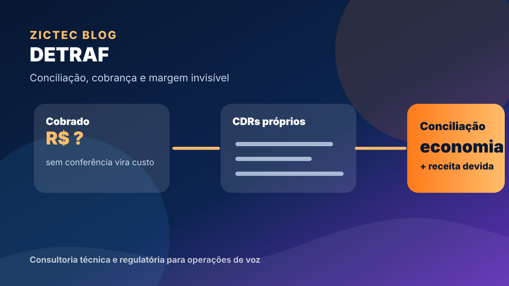
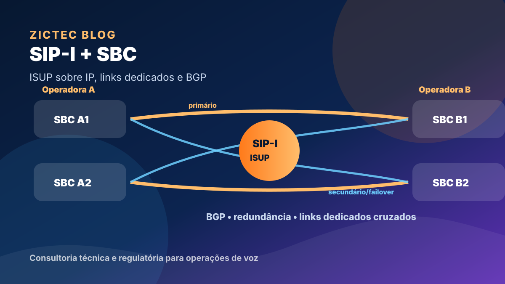
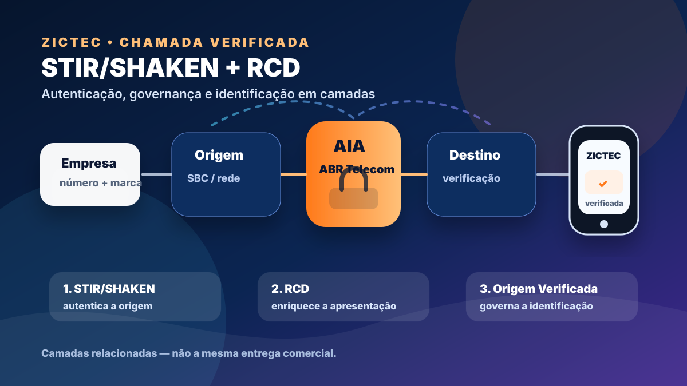

Conteúdo técnico-comercial para quem opera voz, STFC e telecom com responsabilidade.
Guias práticos, checklists e análises para transformar regulação, interconexão, SIP/SBC e autenticação de chamadas em decisões operacionais melhores.
 STFC para ISPs
STFC para ISPsISP e STFC: quando faz sentido entrar em telefonia fixa?
Como avaliar telefonia fixa como produto, operação, margem e responsabilidade regulatória — sem transformar voz em custo invisível.

DETRAF e interconexãoDETRAF na prática: onde operadoras perdem dinheiro sem perceber
Por que prestadoras menores muitas vezes pagam DETRAF cegamente, deixam de apresentar cobranças devidas e perdem margem sem perceber.

SIP-I / SBCSIP-I, SBC e interconexão: a arquitetura mínima para operar voz com segurança
SIP-I não é SIP comum: entenda ISUP, legado SS7, perfil brasileiro, links dedicados, BGP e redundância com pares de SBCs.

Chamada VerificadaSTIR/SHAKEN, RCD e Origem Verificada: autenticação de chamadas no Brasil
Anatel, ABR Telecom/AIA, STIR/SHAKEN, RCD e os limites entre autenticação técnica e identificação visual da marca.
Quer avaliar uma frente da sua operação?
A ZICTEC pode apoiar diagnóstico técnico, priorização regulatória e próximos passos em STFC, DETRAF, SBC, Origem Verificada, suporte ou regulatório.